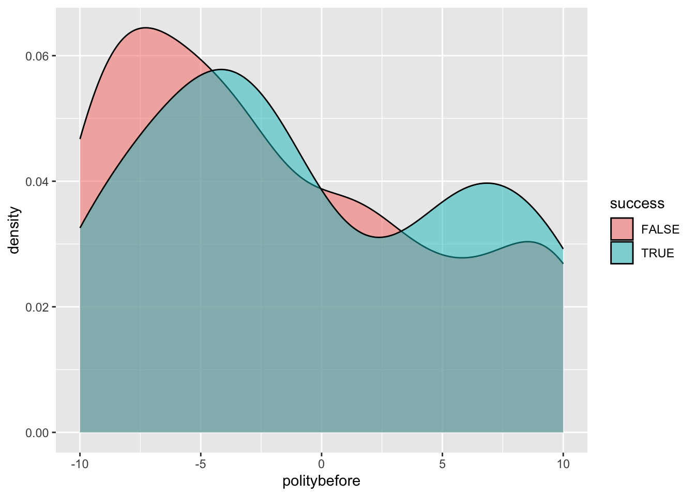
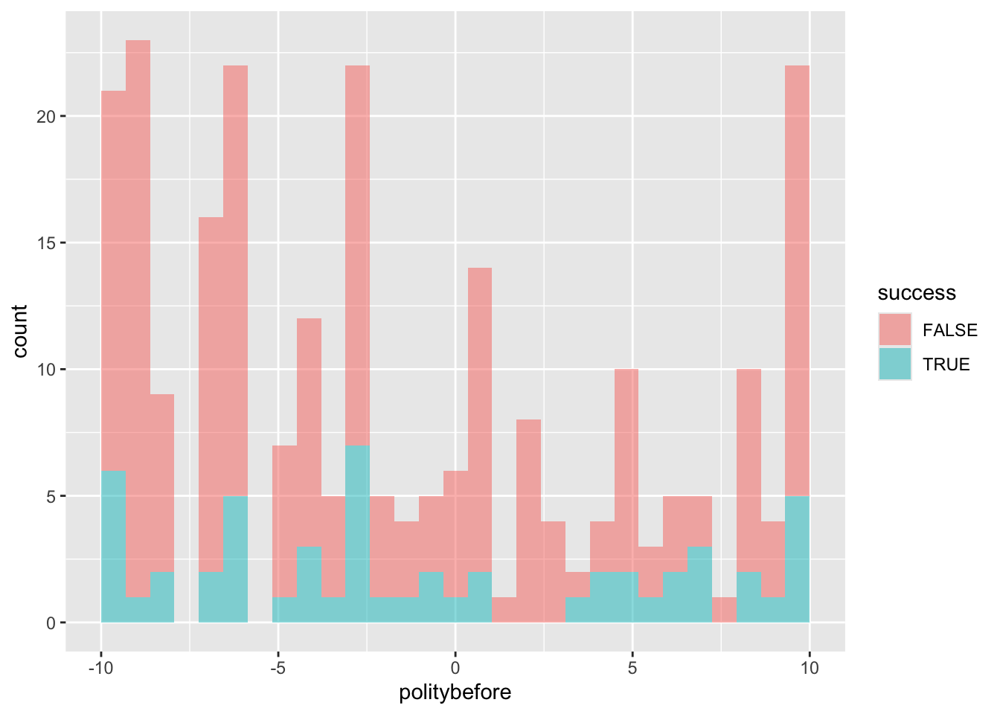

── Attaching core tidyverse packages ──────────────────────── tidyverse 2.0.0 ──
✔ dplyr 1.1.4 ✔ readr 2.1.5
✔ forcats 1.0.0 ✔ stringr 1.5.1
✔ ggplot2 3.5.2 ✔ tibble 3.2.1
✔ lubridate 1.9.4 ✔ tidyr 1.3.1
✔ purrr 1.0.4
── Conflicts ────────────────────────────────────────── tidyverse_conflicts() ──
✖ dplyr::filter() masks stats::filter()
✖ dplyr::lag() masks stats::lag()
ℹ Use the conflicted package (<http://conflicted.r-lib.org/>) to force all conflicts to become errors
Row Level Exercises (filter(), distinct(), and count())
if (!("nycflights13"%in%installed.packages())) {install.packages("nycflights13")}library(nycflights13)flights <- flights
For these exercises, we will use the dataframe flights from the nycflights13 package, which has one row per flight that departed from New York City in 2013 (336776 rows).
Success of Leader Assassination as a Natural Experiment
leaders <-read_csv("data/leaders.csv")
Rows: 250 Columns: 11
── Column specification ────────────────────────────────────────────────────────
Delimiter: ","
chr (3): country, leadername, result
dbl (8): year, age, politybefore, polityafter, interwarbefore, interwarafter...
ℹ Use `spec()` to retrieve the full column specification for this data.
ℹ Specify the column types or set `show_col_types = FALSE` to quiet this message.
leaders
# A tibble: 250 × 11
year country leadername age politybefore polityafter interwarbefore
<dbl> <chr> <chr> <dbl> <dbl> <dbl> <dbl>
1 1929 Afghanistan Habibullah G… 39 -6 -6 0
2 1933 Afghanistan Nadir Shah 53 -6 -7.33 0
3 1934 Afghanistan Hashim Khan 50 -6 -8 0
4 1924 Albania Zogu 29 0 -9 0
5 1931 Albania Zogu 36 -9 -9 0
6 1968 Algeria Boumedienne 41 -9 -9 0
7 1992 Algeria Boudiaf 73 -2 -5.67 0
8 1908 Argentina Alcorta 48 1 1 0
9 1916 Argentina de la Plaza 76 2 2 0
10 1929 Argentina Irigoyen 77 2 -8 0
# ℹ 240 more rows
# ℹ 4 more variables: interwarafter <dbl>, civilwarbefore <dbl>,
# civilwarafter <dbl>, result <chr>
One longstanding debate in the study of international relations concerns the question of whether individual political leaders can make a difference. Some emphasize that leaders with different ideologies and personalities can significantly affect the course of a nation. Others argue that political leaders are severely constrained by historical and institutional forces. Did individuals like Hitler, Mao, Roosevelt, and Churchill make a big difference? The difficulty of empirically testing these arguments stems from the fact that the change of leadership is not random and there are many confounding factors to be adjusted.
Variable
Description
country
Country
year
Year
leadername
Name of leader who was targeted
age
Age of the targeted leader
politybefore
Average polity score during the three-year period prior to the attempt
polityafter
Average polity score during the three-year period after the attempt
civilwarbefore
1 if the country was in civil war during the three-year period prior to the attempt, 0 otherwise
civilwarafter
1 if the country was in civil war during the three-year period after the attempt, 0 otherwise
interwarbefore
1 if the country was in international war during the three-year period prior to the attempt, 0 otherwise
interwarafter
1 if the country was in international war during the three-year period after the attempt, 0 otherwise
result
Result of the assassination attempt
In this exercise we consider a natural experiment in which the success or failure of assassination attempts is assumed to be essentially random. Each observation of the CSV data set leaders.csv contains information about an assassination attempt. The table above presents the names and descriptions of variables in this leader assassination data set.
The polity variable represents the so-called polity score from the Polity Project. The Polity Project systematically documents and quantifies the regime types of all countries in the world from the year 1800. The polity score is a 21-point scale ranging from - 10 (hereditary nonarchy) to 10 (consolidated democracy). The result variable is a 10-category factor variable describing the result of each assassination attempt.
How many assassination attempts are recorded in the data?
leaders |>count()
# A tibble: 1 × 1
n
<int>
1 250
How many countries experienced at least one leader assassination attempt?
leaders |>count(country)
# A tibble: 88 × 2
country n
<chr> <int>
1 Afghanistan 3
2 Albania 2
3 Algeria 2
4 Argentina 5
5 Australia 2
6 Austria 4
7 Belgium 1
8 Bhutan 1
9 Bolivia 4
10 Brazil 1
# ℹ 78 more rows
Among countries with at least one leader assassination attempt, what is the average number of attempts per year?
# A tibble: 1 × 1
attempts_per_year_per_country
<dbl>
1 0.0231
Create a new variable called success that is equal to 1 if a leader dies from the attack at any point and 0 if the leader survives (you’ll need to look at the possible values for the result variable).
Hint: You can use %in% to see if a value is in a vector. For example,
# A tibble: 88 × 2
country country_starts_with_A
<chr> <lgl>
1 Afghanistan TRUE
2 Albania TRUE
3 Algeria TRUE
4 Argentina TRUE
5 Australia TRUE
6 Austria TRUE
7 Belgium FALSE
8 Bhutan FALSE
9 Bolivia FALSE
10 Brazil FALSE
# ℹ 78 more rows
leaders |>distinct(result)
# A tibble: 10 × 1
result
<chr>
1 not wounded
2 dies within a day after the attack
3 survives, whether wounded unknown
4 wounded lightly
5 plot stopped
6 hospitalization but no permanent disability
7 dies between a day and a week
8 dies, timing unknown
9 survives but wounded severely
10 dies between a week and a month
leaders <- leaders |>mutate(success = result %in%c("dies within a day after the attack", "dies between a day and a week", "dies, timing unknown", "dies between a week and a month"))
What is the overall success rate of leader assassination?
Is there any difference in the age of targeted leaders between successful and failed attempts? You can use summarise(), make plot(s) with ggplot(), or both.
ggplot(leaders, aes(x = politybefore, fill = success)) +geom_density(alpha =0.5)

ggplot(leaders, aes(x = politybefore, fill = success)) +geom_histogram(alpha =0.5)
`stat_bin()` using `bins = 30`. Pick better value with `binwidth`.

Optional causal inference: Do you find it plausible that this is a causal effect? Why?
Create a new variable called warbefore that is 1 if a country is in civil or international war in the three years before the assassination attempt and 0 otherwise.
Compare the success rate of assassinations between cases where the country is in civil or international war in the three years before the assassination attempt and cases where it is not.
Optional causal inference: Reconsider whether the data supports the assumption that the success of assassination attempts is randomly determined.
Create a new variable called warafter that is 1 if a country is in civil or international war in the three years after the assassination attempt and 0 otherwise.
Calculate the rate of civil war, international war, and any kind of war after the assassination attempt between cases with and without successful assassinations.